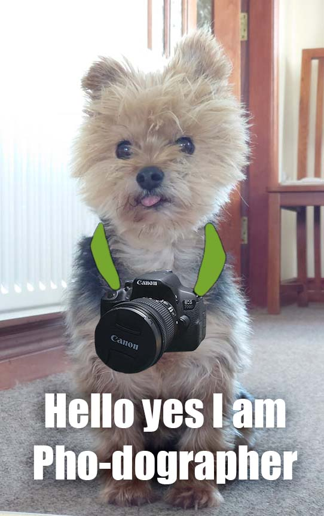

My name is Steven Marron and I’m a photographer from Drogheda Co.Louth, Ireland.
Over the course of the COVID-19 lockdowns I developed a passion for photography to
compliment my photo editing experience. I also have experience with drone
photography, video editing and music production. Although my photography spans a variety of subject matters
I have definitely taken to photographing the beautiful Irish landscapes this country has to offer. In particular,
sites associated with Irish mythology and ancient Ireland have been at the forefront of a lot of my photography expeditions.
Sites such as the Clochafarmore standing stone where Cu Chulainn is said to have met his end, Newgrange, the Boyne Valley area
and plenty more.
I use a Canon 700D camera with a variety of lenses to photograph different subject matters.
For landscapes I tend to use either my Canon 10-18mm wide angle lens or the 18-55mm kit lens. For wildlife
and action shots I use my Canon 70-300mm telephoto lens and for portraits I use my "Nifty-Fifty" Canon 50mm 1.8 lens,
and occassionally the lower end of the 70-300mm telephoto lens.
For drone photography and videography I use my DJI Mavic Mini drone as it's light and compact so it's easy to add it to the bag
whenever I'm going on a photography adventure!
I use Adobe Lightroom and Photoshop to edit my photos once I'm happy with my composition and quality.
Photoshop allows a lot of creative control over photographs however I tend to limit it's use to "fixing" issues
such as removing cables and unsightly elements from my the photo. Lightroom on the other hand is a fantastic tool for colour and
overall photo texture editing and has proved invaluable in the efforts to give my photos a bit of *pop*.
For video editing I use a free software called Davinci Resolve, also because of its remarkeable control over colour and it's easy to use interface.

